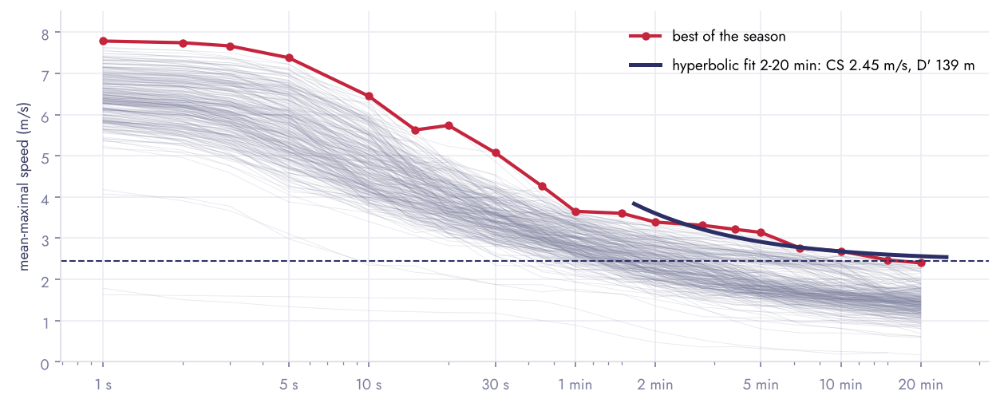
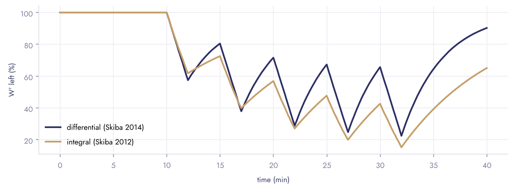

Python library · endurance · sport science
Critical power and speed, with a report
From a few maximal efforts, a 3-minute all-out test or a season of training files to critical power (CP, W′) or critical speed (CS, D′): five published models compared, the W′ balance of a session, and a designed PDF report ready to hand to an athlete or a coach.
Get started
Four efforts, one line
pip install "critpower[report] @ git+https://github.com/Clement0242/critpower"
import critpower as cp
fit = cp.fit_critical([150, 270, 480, 840], [413, 355, 321, 301]) # durations (s), mean power (W)
print(fit.summary()) # CP 277.9 W (SEE 0.5 %), W' 20.4 kJ (SEE 1.7 %)
models = cp.compare_models([150, 270, 480, 840], [413, 355, 321, 301])Pass kind="speed" for running: the same relationship gives critical speed (m/s) and D′ (m),
with pace and race-time predictions. Every parameter comes with its standard error; compare_models ranks
the fits and refuses to crown a model that has as many parameters as data points.
PDF report
Three pages an athlete can read
critical_report writes an A4 report: key figures, an automatic reading in plain
words (including whether the estimate is precise enough), the intensity-duration curve, the work-time line, the table of
models, predictions (sustainable intensity per duration, time limit per target), the W′ balance of a session, the
method and the references. French or English; your organisation's name and logo are options, nothing is added by default.
Field data
A season of GPS, no test needed
mean_maximal reduces a recording to its best rolling mean for each duration (a match at
10 Hz in milliseconds); best_of keeps the best of all sessions; fit_field fits the 2–20 min
window. The example is real: one player of an elite women's football team, 276 sessions from the open SoccerMon
dataset, streamed from the archives without downloading them.

Field data give a lower bound, and the model choice matters.
Football is intermittent: nobody runs 20 minutes flat out in a match. On this player, critical speed is 2.25 m/s with the linear work-time model and 2.45 m/s with the hyperbolic one; the report shows both instead of hiding the spread. Eight days with GNSS faults (speed pinned at 10 m/s for minutes) are left out.
W′ balance
What is left in the tank, second by second
Above CP, W′ drains by the excess; below it, it refills. Two published models: the differential one (Clarke & Skiba 2013, Skiba et al. 2014), unit-agnostic, and the integral one (Skiba et al. 2012), whose recovery constant was established in cycling.

Tests
What is checked
| Check | Result |
|---|---|
| Exact recovery of CP and W′ by the hyperbolic and both linear models; of Pmax (3-parameter) and the long-duration decline (omni) | ≤ 0.1 % |
| Hyperbolic fit and intensity-1/time regression minimise the same residuals: same parameters, same SEE | identical |
| 3-min all-out test on a known exponential decay to CP | CP ± 1 W |
| Time to exhaustion is the exact inverse of the prediction; infinite below CP | exact |
| W′ balance: linear depletion above CP, never above W′, integral time constant | exact |
| Reports in French and English, lab and field | rendered |
References: Monod & Scherrer 1965, Moritani et al. 1981, Hill 1993, Morton 1996, Vanhatalo et al. 2007, Pettitt et al. 2012, Skiba et al. 2012 and 2014, Clarke & Skiba 2013, Jones & Vanhatalo 2017, Muniz-Pumares et al. 2019, Puchowicz, Baker & Clarke 2020, Smyth & Muniz-Pumares 2020. Data: SoccerMon (Midoglu et al. 2024, CC-BY 4.0).